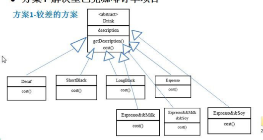
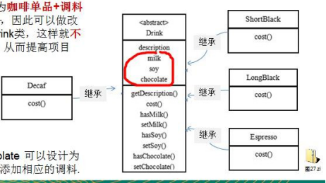
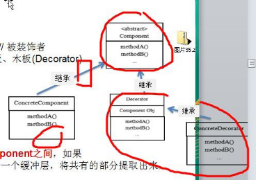
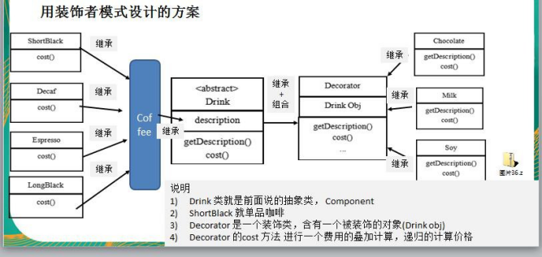
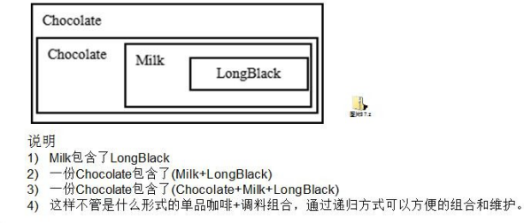
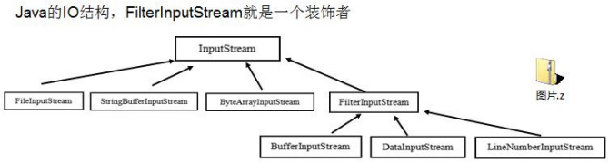

# 星巴克咖啡订单项目（咖啡馆）：
咖啡种类 / 单品咖啡：Espresso (意大利浓咖啡)、ShortBlack、LongBlack (美式咖啡)、Decaf (无因咖啡)
调料：Milk、Soy (豆浆)、Chocolate
要求在扩展新的咖啡种类时，具有良好的扩展性、改动方便、维护方便
使用 OO 的来计算不同种类咖啡的费用：客户可以点单品咖啡，也可以单品咖啡 + 调料组合。
# 方案 1 - 解决星巴克咖啡订单项目

# 方案 1 - 解决星巴克咖啡订单问题分析
Drink 是一个抽象类，表示饮料
des 就是对咖啡的描述，比如咖啡的名字
cost () 方法就是计算费用，Drink 类中做成一个抽象方法.
Decaf 就是单品咖啡， 继承 Drink, 并实现 cost
Espress && Milk 就是单品咖啡 + 调料， 这个组合很多
问题：这样设计，会有很多类，当我们增加一个单品咖啡，或者一个新的调料，类的数量就会倍增，就会出现类爆炸
# 方案 2 - 解决星巴克咖啡订单 (好点)
- 前面分析到方案 1 因为咖啡单品 + 调料组合会造成类的倍增，因此可以做改进，将调料内置到 Drink 类，这样就不会造成类数量过多。从而提高项目的维护性 (如图)

- 说明: milk,soy,chocolate 可以设计为 Boolean, 表示是否要添加相应的调料.
# 方案 2 - 解决星巴克咖啡订单问题分析
方案 2 可以控制类的数量，不至于造成很多的类
在增加或者删除调料种类时，代码的维护量很大
考虑到用户可以添加多份 调料时，可以将 hasMilk 返回一个对应 int
考虑使用 装饰者 模式
# 装饰者模式定义
装饰者模式：动态的将新功能附加到对象上。在对象功能扩展方面，它比继承更有弹性，装饰者模式也体现了开闭原则 **(ocp)**
这里提到的动态的将新功能附加到对象和 ocp 原则，在后面的应用实例上会以代码的形式体现，请同学们注意体会。
# 装饰者模式原理
- 装饰者模式就像打包一个快递
主体：比如：陶瓷、衣服 (Component) // 被装饰者
包装：比如：报纸填充、塑料泡沫、纸板、木板 (Decorator)
Component 主体：比如类似前面的 Drink
ConcreteComponent 和 Decorator
ConcreteComponent：具体的主体， 比如前面的各个单品咖啡
Decorator: 装饰者，比如各调料.
在如图的 Component 与 ConcreteComponent 之间，如果 ConcreteComponent 类很多，还可以设计一个缓冲层，将共有的部分提取出来，抽象层一个类。

# 装饰者模式解决星巴克咖啡订单

# 装饰者模式下的订单：2 份巧克力 + 一份牛奶的 LongBlack

# 装饰者模式咖啡订单项目应用实例
public abstract class Drink { | |
public String desc; | |
private float price = 0.0f; | |
public String getDesc() { | |
return desc; | |
} | |
public void setDesc(String desc) { | |
this.desc = desc; | |
} | |
public float getPrice() { | |
return price; | |
} | |
public void setPrice(float price) { | |
this.price = price; | |
} | |
public abstract float cost(); | |
} |
public class Coffee extends Drink { | |
public float cost() { | |
return super.getPrice(); | |
} | |
} |
public class LongBlack extends Coffee { | |
public LongBlack(){ | |
setDesc(" LongBlack "); | |
setPrice(8f); | |
} | |
} |
public class ShortBlack extends Coffee { | |
public ShortBlack(){ | |
setDesc(" ShortBlack "); | |
setPrice(10f); | |
} | |
} |
public class Espresso extends Coffee { | |
public Espresso(){ | |
setDesc(" espresso "); | |
setPrice(5f); | |
} | |
} |
/** | |
* @author WangXuefeng | |
* @version 1.0 | |
* @date 2021/6/22 20:09 | |
* @description 装饰类 | |
*/ | |
public class Decorator extends Drink { | |
private Drink drink; | |
public Decorator(Drink drink) { | |
this.drink = drink; | |
} | |
public float cost() { | |
return getPrice() + drink.cost(); | |
} | |
@Override | |
public String getDesc() { | |
return desc + " " + getPrice() + "&&" + drink.getDesc(); | |
} | |
} |
public class Chocolate extends Decorator { | |
public Chocolate(Drink drink) { | |
super(drink); | |
setDesc(" Chocolate "); | |
setPrice(1f); | |
} | |
} |
public class Milk extends Decorator { | |
public Milk(Drink drink) { | |
super(drink); | |
setDesc(" Milk "); | |
setPrice(2f); | |
} | |
} |
public class Client { | |
public static void main(String[] args) { | |
Drink espresso = new Espresso(); | |
System.out.println("单品： " + espresso.getDesc() + "花费： " + espresso.cost()); | |
// 添加一份牛奶 | |
espresso = new Milk(espresso); | |
System.out.println("添加牛奶费用" + espresso.cost()); | |
System.out.println("添加牛奶描述" + espresso.getDesc()); | |
// 添加一份巧克力 | |
espresso = new Chocolate(espresso); | |
System.out.println("添加巧克力费用" + espresso.cost()); | |
System.out.println("添加巧克力描述" + espresso.getDesc()); | |
// 添加第二份份巧克力 | |
espresso = new Chocolate(espresso); | |
System.out.println("添加第二份巧克力费用" + espresso.cost()); | |
System.out.println("添加第二份巧克力描述" + espresso.getDesc()); | |
} | |
// 输出 | |
} |
# 装饰者模式在 JDK 应用的源码分析
Java 的 IO 结构，FilterInputStream 就是一个装饰者

源码说明
public static void main(String[] args) throws Exception{ | |
// TODO Auto-generated method stub | |
// 说明 | |
//1. InputStream 是抽象类，类似我们前面讲的 Drink | |
//2. FileInputStream 是 InputStream 子类，类似我们前面的 DeCaf, LongBlack | |
//3. FilterInputStream 是 InputStream 子类：类似我们前面 的 Decorator 修饰者 | |
//4. DataInputStream 是 FilterInputStream 子类，具体的修饰者，类似前面的 Milk, Soy 等 | |
//5. FilterInputStream 类 有 protected volatile InputStream in; 即含被装饰者 | |
//6. 分析得出在 jdk 的 io 体系中，就是使用装饰者模式 | |
DataInputStream dis = new DataInputStream(new FileInputStream("d:\\abc.txt")); System.out.println(dis.read()); | |
dis.close(); | |
} |